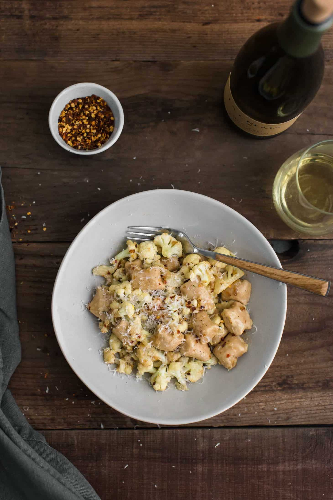

White Bean Gnocchi with Pan-fried Cauliflower and Cream Sauce

A perfect date-night in meal with white bean gnocchi (made from pureed white beans and flour) topped with an easy cauliflower pan-sauce with chili flakes.
Prep Time: 20 minutes
Cook Time: 25 minutes
Total Time: 45 minutes
Yield: 4 servings
Ingredients
For the gnocchi:
- 1 Cup white navy beans (drained and rinsed)
- 1 large egg
- 1/4 tsp. salt
- 1 Cup '00' tipo flour
For the cauliflower sauce:
- 2 Tbsp unsalted butter
- 3 Tbsp minced shallots
- 2 Cups cauliflower florets
- 1/2 Cup heavy cream
- 1 tsp. fresh thyme
- 1/4 to 1/2 tsp. chili flakes
- 1/4 Cup shredded parmesan
- Salt + pepper to taste
Instructions
- In a food processor, combine the white beans in a food processor with 2 tablespoons of the reserved liquid. Puree, adding more liquid, until the white beans are smooth. Add in the egg and salt, pulsing until the egg is well incorporated.
- Continue to pulse and add ½ cup of flour. Add more flour as needed until the mixture forms a soft dough (the dough should still feel be tacky, just use more flour on your hands and surface). Place onto a surface covered in flour. Divide dough into three balls and roll each out into 1" ropes and cut gnocchi 1" at a time.
- Bring a large pot of salted water to a boil. Place half the gnocchi in the boiling water and let cook for 5-6 minutes. Gnocchi should be tender and cooked through. Spoon out the first batch and add the second half of the gnocchi. Cook until tender.
- While the gnocchi are cooking, make the cauliflower sauce. In a large skillet, melt the butter over medium-low heat. Add the minced shallots and cauliflower to the pan. Cook until the cauliflower begins to brown, 8 to 10 minutes. Stir only a couple times to ensure a nice caramelization.
- Once cauliflower is tender, reduce the heat to low and measure in the cream, thyme, and chili flakes. Simmer until the cream thickens slightly, 3 to 4 minutes. Stir in the parmesan, salt, and pepper to taste.
- Divide the gnocchi into four bowls and top with extra thyme and chili flakes as desired.
Notes
Tips & Tricks: Getting the right consistency for the gnocchi is key- extra flour means a denser bite. You want the dough to come together but still have a bit of stickiness to it.
Look for vegetarian-friendly parmesan that uses microbial or vegetarian rennet.
Home